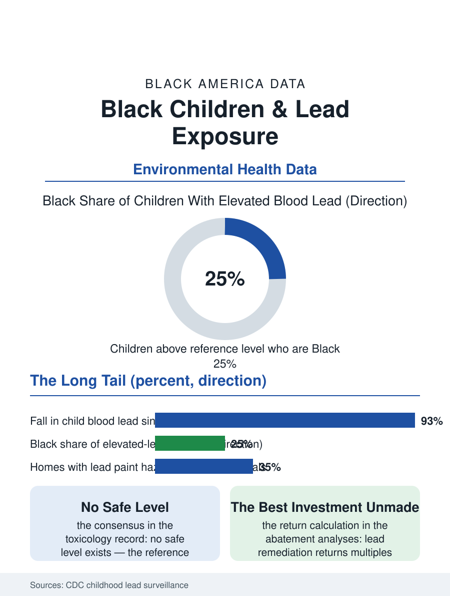

Black Public Health
The Housing Stock's Memory: Black Children and Lead
Blood lead levels have fallen ninety percent nationally, but the tail concentrates in Black children through old paint, soil, and water lines. The lead file.

Lead exposure remains, decades after the leaded gasoline era ended, a measurable presence in Black children's blood, at rates above the national average in the federal surveillance data, concentrated by the same housing and geography that distribute every other environmental burden in this atlas. The reference level has been lowered repeatedly as the science found harm at lower and lower doses. This article reads the lead file.
The Housing Stock's Memory
Lead's routes to the child are the built environment's archives: paint in the pre-1978 housing stock, whose deterioration in the rental inventory of the older cities produces the dust the toddlers' hands carry to their mouths; soil along the old roadways and around the demolished structures of the industrial districts; water through the lead service lines and solder of the older plumbing, the route Flint made nationally legible. The exposure map is therefore the housing map with a lag: the neighborhoods of the oldest stock, the deepest disinvestment, and the Black population's concentration within them, from the rust belt's rowhouse belts to the rural South's older farm housing, carry the elevated blood lead levels the state surveillance systems report, with the Black share of children above the reference level running well above the Black share of the child population in state after state. Rental housing concentrates the risk because the remediation obligation and the ability to pay sit on opposite sides of the landlord relation, and the inspection regimes, complaint-driven in most jurisdictions, systematically underreach the tenants least able to risk a complaint, a mechanism the housing files document in the code enforcement context generally. The child's exposure is thus an output of the property system, measured in micrograms, in the pattern the environmental files repeat: the burden follows the deed's history, not the family's choices.
The Body's Ledger
The toxicology is the file's grim precision: there is no safe level of lead in a child's blood in the current scientific consensus, the reference value being a surveillance benchmark, set at the distribution's upper tail, and lowered as the distribution falls, not a threshold of harm. The documented effects at the levels American children carry are cognitive and behavioral, IQ points and attention and school performance measured in the longitudinal studies that followed exposed cohorts from the paint-chip era to adulthood, with the effects' persistence and the absence of any chelation benefit at low levels making prevention the only medicine the file offers. The school data close the loop: the districts with the highest measured exposure feed the achievement files their most environmentally burdened cohorts, and the lead variable belongs in every honest accounting of the test score gaps beside the funding and curriculum variables, a confound the education literature increasingly quantifies and the remediation advocates cite in the cost-benefit analyses that make abatement one of the highest-return public investments ever measured, returning multiples of its cost in earnings and avoided services across the exposed child's lifetime. The adult file extends the ledger: the occupational exposures of the battery, smelting, and renovation trades, and the legacy body burden of the leaded-gasoline generation now entering the aging files, its cardiovascular and cognitive signatures under active study.
Abatement: The Unfinished Job
The policy file records a success and a remainder. The success is historic: children's average blood lead levels have fallen by more than ninety percent since the gasoline and paint bans, one of public health's genuine triumphs, driven by exactly the source-elimination strategy the file endorses. The remainder is the distribution's tail, which no longer yields to national bans because its sources are specific properties, specific water systems, specific soils, and the remediation therefore proceeds parcel by parcel at costs the property owners resist and the public programs fund inadequately against the measured returns. The proactive models exist in the data: rental inspection regimes that test before a child is poisoned rather than after, service line replacement programs whose prioritization by burden rather than by neighborhood wealth is the equity question in municipal form, and the soil remediation of the smelter towns whose Black districts carry the industrial century in their yards. Flint's place in the file is as the system's confession: a city's water poisoned by a governance decision, its Black child population the majority of the exposed, the remediation and the trust repair still running. The lead file closes on the toddler's hand and the windowsill, the oldest interface in the environmental health record. The science is settled, the returns are measured, the map is published. What remains is the parcel-by-parcel will, and the surveillance data, state by state, record exactly which children's blood is still waiting for it.
More in Black Public Health
Hypertension Among Black Adults: Prevalence, Control, and Consequences
About 55 percent of Black adults have hypertension — the highest rate of any U.S. group. Prevalence, onset, control, and the stroke, heart, and kidney consequences in the data.
Diabetes Among Black Adults: Prevalence and Complications
Nearly one in five Black adults has diabetes, diagnosed or undiagnosed — and its complications fall with particular weight. The CDC data on prevalence, control, and outcomes.
Black Life Expectancy: The Gap at Birth and Its Causes
Black life expectancy at birth is about 73 years, roughly five years below the national figure — the summary measure of every health gap in this section. The CDC data.
Source: Centers for Disease Control and Prevention, Childhood Lead Poisoning Prevention surveillance data; state blood lead registries.